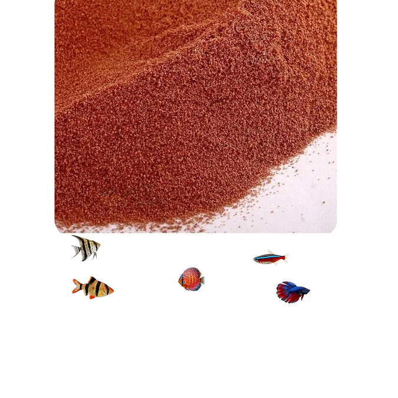

Ração para alevinos, guppy, lebistes e peixes ornamentais pequenos

A ração premium para peixes ornamentais é um alimento completo e altamente nutritivo, ideal para alevinos, betta, guppy, killifish e outros peixes de pequeno porte. Com 62% de proteína, proporciona crescimento saudável e excelente desenvolvimento.
Sua fórmula com vegetais, krill e astaxantina auxilia na intensificação das cores naturais, fortalecimento dos peixes e alta digestibilidade, garantindo ótima aceitação no aquário.
Benefícios
- 62% de proteína de alta qualidade
- Auxilia no crescimento saudável
- Intensifica as cores naturais
- Alta digestibilidade
- Excelente aceitação
Espécies Indicadas
- Alevinos
- Betta
- Guppy
- Killifish
- Poecilídeos
- Tetras
- Rasboras
- Outros peixes ornamentais pequenos
Mix Campo, ração Mix Campo, produtos Mix Campo, alimentação para peixes Mix Campo